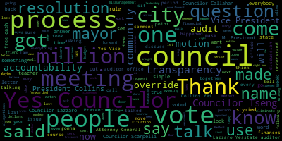
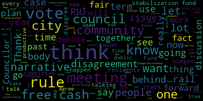
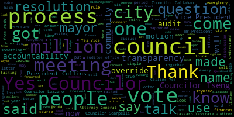
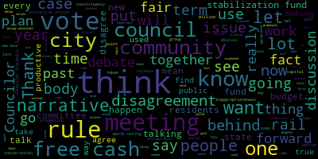

total time: 21.36 minutes
total words: 2796

total time: 32.04 minutes
total words: 4553

{kind=link}
total time: 8.2 minutes
total words: 1267

total time: 20.54 minutes
total words: 3133

{kind=link}
total time: 9.44 minutes
total words: 1470

[Bears]: 14th regular meeting, July 23rd, 2024. It's called to order. Mr. Clerk, please call the roll.
[Scarpelli]: Councilor Callahan. Present. Vice President Collins. Present. Councilor Lazzaro. Present. Councilor Leming.
[Bears]: Councilor Leming is going to be absent due to his military service.
[Scarpelli]: Councilor Scarpelli. Present. Councilor Tseng.
[Bears]: Present.
[Scarpelli]: President Ferris.
[Bears]: Present. Six present, one absent. The meeting is called to order. Please rise to salute the flag. Announcements, accolades, remembrances, reports, and records. 24-442, offered by Councilor Scarpelli. Thank you, Mr. President. Be it resolved that the City Council send our deepest condolences to the family of long-time Medford public school teacher, Robin Irving, on recent passing. Councilor Scarpelli.
[Scarpelli]: Thank you, Mr. President. It's a sad day. when we heard the passing of probably one of the finest teachers to ever grace the hallways in the Medford Public Schools. Robin Irving was a very special person. She made it her life's mission to take care of our children. I think it's over 40 years of service, and Robin fought the fight against cancer and lost her battle. It's ironic that today's her 70th birthday, and I know that the family has put together a GoFundMe page to make sure her name carries on. in her name to scholarships for deserving children. So I wanted to mention that. She was an amazing person. I had many friends that had Ms. Irving, and when they talked about Ms. Irving, as if they had a mother out of their home, someone that took care of them. And then when I was, awarded the position to be a McGlynn Elementary Phys Ed teacher, I was honored to work on the other side of the door of Ms. Irving's. And if you ever went by Ms. Irving's room, you know that she was a teacher. She had everything she needed for every kid with every single lesson. And she was tough, there was times she was tough, but everybody respected her. And when we heard the sad news, I'm not less of a man to say, but I cried in my truck because she was one of the good ones. And just wanted to reach out to her family, especially her nieces and nephews. I know how much she loved them. And send our deepest condolences. This is a person that, you wanna name a library after, or you wanna name, leave someone's name to show their legacy, Robin Irving's the teacher that deserves that. So goodbye, my friend, happy birthday, my friend, and thank you, Mr. President. Thank you, Councilor Scarpelli. Councilor Saint.
[Tseng]: Thank you. Sorry, let me get the, get the audio working. I wanted to thank Councilor Scarpelli for introducing this resolution. I knew Ms. Servini very, very well in my time at the McGlynn Middle School. You know, Councilor Scarpelli spoke a little bit to how tough she was as a teacher. And I think, you know, if you just walk past the classroom, you would think that you would see the tough teacher that she was. But I think Councilor Scarpelli also alluded to the fact that she really was there for every student. She knew what every student needed. You could ask her about any student and she could tell you individualized, you know, what her plan was with that student and how to get them to where they needed to be. And I'm not talking about math only. even though math was the subject that she taught, but I'm talking about learning how to grow up, how to mature, how to handle responsibilities. And I think that's something that really stands out in any of our memories of Ms. Irving as a teacher is how much she trusted her students to handle responsibility and to do adult tasks. How, you know, she would ask students to run errands for her in the building, to talk to administrators, to practice doing those tasks that seemed really difficult to a seventh grader. Ms. Irving will be someone I think Medford will miss a lot. And I just have this deep, deep, deep love for her and I send my condolences to her family. I wish her, you know, a happy birthday as Councilor Scarpelli did. And again, I thank Councilor Scarpelli for putting this on the agenda.
[Bears]: Thank you, Councilor Tseng. On emotional counselors are probably seconded by counselors. Mr. Clerk, please call the roll.
[Scarpelli]: Yes. Yes. Yes. Yes. Yes. Yes.
[Bears]: Yes, six in the affirmative, one absent. The motion passes. Records, the records of the meeting June 25th, 2024 were passed to Councilor Tseng. Councilor Tseng, how did you find those records?
[Tseng]: Sorry, could you repeat that once more?
[Bears]: Councilor Tseng, the records were passed to you. How did you find them? I found them in order and moved to approve. On the motion to approve it by Councilor Sands, seconded by? Second. Seconded by Vice President Collins. Mr. Clerk, please call the roll.
[Scarpelli]: Councilor Callahan? Yes. Vice President Collins? Yes. Councilor Lazzaro? Yes. Councilor Leming is absent. Councilor Scarpelli? Yes. Councilor Sands?
[Bears]: Yes. Yes, 6 in the affirmative, 1 absent, the motion passes. Reports of committees, 24-033 offered by Vice President Collins, Planning and Permanent Committee, June 25th, 2024, report to follow, Vice President Collins.
[Collins]: Thank you, President Bears. At our June 25th meeting of the Planning and Permitting Committee, we met once again with the City Council's zoning consultant. The topic this time was to go over in more detail a work plan for the remainder of the year and the term. With that zoning consultant, moving plans and goals that have been placed in Medford's comprehensive plan, housing production plan climate action and adaptation plan and other public city plans into pieces of legislation that the council can consider debate and vote on. And at that meeting, we determined that the next meeting of the planning and permitting committee, which happens to be tomorrow, Wednesday, we would go over detailed zoning maps with the zoning consultant, followed by a discussion of housing related topics to further our work on global and district level zoning changes in the city. and to begin talking about housing-related issues. I move approval.
[Bears]: On the motion of Councilor Collins to approve, seconded by. Seconded by Councilor Cowdery and Mr. Clerk, please call the roll.
[Scarpelli]: Councilor Cowdery? Yes. Vice President Collins? Yes. Councilor Lazzaro? Yes. Councilor Flamenco-Zarazaga? Yes. Councilor Scarpelli? Yes. Councilor San Buenaventura?
[Bears]: Yes. Yes, 60 affirmative, one absent, the motion passes. 24-006 offered by President Burris, Committee of the Whole, June 26, 2024 report to follow. We discussed the city council's governing agenda and making updates to that agenda to reflect the progress and number of items that have been passed in the first six months of the term and to reflect our plan for the upcoming 18 months of the term. Is there a motion to approve?
[Yanko]: So moved.
[Bears]: On the motion of Councilor Collins to approve the committee report, seconded by Councilor Callahan. Mr. Clerk, please call the roll.
[Scarpelli]: Councilor Callahan? Yes. Vice President Collins? Yes. Councilor Lazzaro? Yes. Councilor Nunziata? Yes. Councilor Schell?
[Bears]: Yes.
[Scarpelli]: Councilor Tseng? Yes.
[Bears]: Yes. Yes, 16 affirmative, one absent, the motion passes. 24-354 and 24370 offered by Councilor Leming, Resident Services and Public Engagement Committee, June 26, 2024, report to follow. By email, Councilor Leming sent me a report to read. The Council Resident Services and Public Engagement Committee edited and approved the June Council Newsletter, then discussed a guide to the practices and procedures of the City Council, and Councilor Tseng we'll be drafting a guide for residents to council practices and procedures to be discussed at a future committee meeting. Is there a motion to approve? On the motion to approve the resident service and public engagement committee report by councilor, vice-president Collins, seconded by councilor Lazzaro. Mr. Clerk, please call the roll.
[Scarpelli]: Councilor Calderon? Yes. Vice-president Collins? Yes. Councilor Lazzaro? Yes. Councilor Sagan? Yes. Thank you. President Bears?
[Bears]: Yes, 60 affirmative, one absent, the motion passes. Motions, orders, and resolutions 24441 offered by Councilor Scarpelli, whereas the Mayor and Medford City Council have repeatedly stated their goal to ensure the highest degree of transparency and accountability in all governmental matters, and whereas on June 28, 2024, Medford City Councilor George Scarpelli sent a letter to the Office of the Attorney General and the Office of the State Auditor. And whereas the letter of Councilor Scott Polley raised various issues relating to the vote taken on significant municipal financial matters and the actions of the Medford City Council. And whereas, in light of the long-term absence of an appointed city solicitor in the city of Medford and the fact that the city's private legal counsel is a law firm hired by the mayor, and whereas the director of operations of the office of the state auditor responded to Councilor Scarpelli's letter, that the state auditor would, quote, examine the issues raised in the letter if the examination of these issues had the approval of a majority vote of the city council and the mayor, as required by state statute, and whereas the fairest and most objective fashion to resolve the issues raised in Councilor Scarpelli's letter is to have an outside agency address these issues, and determine the most appropriate way to address these issues. Now, therefore, we are resolved that the Medford City Council approve and authorize the Office of the State Auditor to examine the issues set forth in said letter. Councilor Scarpelli.
[Scarpelli]: Thank you, Mr. President. The point of my resolution is very simple. This Councilman and I use the words transparency and accountability very often, and I do too. These words count. at the count only if we not only talk the talk, but we walk the walk. As this City Council is well aware, I submitted a letter to the Attorney General and the State Auditor's Office expressing my concerns over the way the City Council has used Rule 21 in Mass General Law, C-43, Section 22, unfairly and in a self-serving way to eliminate the discussion of resolutions that call for the expenditure of millions upon millions of dollars. When papers from the mayor were before the city council on June 7th, the council suspended the rules and approved the motion that the council rule 21 not be allowed to be invoked. Then on June 25th, my request to invoke Mass General Law C-43, section 22, which allows any one council to postpone consideration of a paper for one week was ruled out of order. At both of those meetings, my hope was that we could have an appropriate amount of time to discuss these significant issues and also receive input from our residents. When the council leadership ruled my request out of order, I had no choice but to bring this to the attention of the proper state offices to receive their input. The state auditor's office responded to me quickly. and reviewed my requests and explained first the requirements of the majority of the city council and the agreement of the mayor to move forward. So here's the simple part. If this council feels confident that its actions of those two meetings were correct, then your confidence in your actions can be reflected in your yes vote to allow this review. That would be true transparency and accountability. If however, you're not confident that the council's action were correct, you should still vote yes for this review because then we will have guidance from the state as opposed to an opinion bought and paid for by attorneys hired by the mayor. That would be true transparency and accountability. However, if you vote no on this resolution, it will show the residents of our city that this council uses the words transparency and accountability as a punchline that is empty and deceptive. Now is the time to stand up for what you say you believe in. let everyone know the only thing greater than your hollow words is your cowardice. So I will tell you, I will ask as a form of a motion that we vote to send this to be reviewed by the auditor, state auditor's office to look at our finances. Now, again, I'll say it publicly again. I have not one time mentioned that there is someone doing something illegal with the city's funds. My questions have been and stymied for one factor, one factor only, financial mismanagement. So I move that question, Mr. President.
[Bears]: I move that Councilor Scarpelli to approve the resolution, seconded by. Second, I'll second it. You can. Second. Oh, we have a second. Vice President Collins.
[Collins]: President Bears, did Councilor Scarpelli move the question or is debate still out on the floor?
[Bears]: The Councilor moved to approve. I would, if Councilor has something to say, she can. She did second the motion. Okay, thank you. Vice President Collins.
[Collins]: I'll happily defer to Councilor Callahan while I collect my thoughts.
[Callahan]: I also reached out after seeing this, I reached out to the State Auditor and I also reached out to the Attorney General. It seems quite clear from the letter that Councilor Scarpelli wrote that the request in the letter, and he says right here, to examine the issues set forth in said letter. That letter is to address issues that he mentioned, which include whether the chair properly ruled out of order a certain state piece of legislation, C43 section 22 of MTL. When I reached out to the state auditor, what the state auditor said was, our office does not conduct audits of city councils, full stop. We can, however, conduct audits of cities if requested to do so by a city council. So there's something I find very interesting happening here, which is this motion, as written, says that it is to examine the issues set forth in the letter. And I'm going to tell you right now, the state auditor does not do that. That is what they told me in writing. They don't do that. This is a legal question. And Councilor Scarpelli seems to think that for some reason, the contracted legal team, KP Law, because they work for the mayor is different somehow from a city solicitor, which also would work for the administration and for the mayor. And I've talked to to city councilors from many cities for many years about the fact that city solicitors do work for the administration, and they tend to, you know, have administration centric ideas right that is a totally normal well understood thing. But this idea that somehow if we had a city solicitor, it would not be hired by the mayor, and yet the KP law is hired by the mayor. And so therefore we should never take the opinion of the legal team that we currently have. What we need to know and what was in this letter is a legal opinion. And I, unfortunately, I did not have time because this was sent out on Friday, and I reached out to them on Monday, and today is Tuesday, so I have not yet spoken to the Attorney General, but I am sure that if what we want is a legal opinion from the state, we can get that legal opinion from the state. Now, what's interesting is that the motion that Councilor Scarpelli has now stated is not to examine the issues set forth in said letter, which would be essentially to audit the legal opinion in the particular legal statements made by the city council, which the state auditor does not do. But now it is to look at our finances around financial mismanagement. Now, that is something that the state auditor can financially audit a city. They will charge the municipality, so the taxpayers of Medford will pay for that.
[Bears]: Thank you.
[Callahan]: And I would like to ask a question. Is there not a regular audit done of the city every year?
[Scarpelli]: Yes.
[Callahan]: Thank you. There is a regular audit done of the city finances every year.
[Bears]: The city's finances are audited every year by the independent auditor. Council Vice President Collins. Council Vice President Collins. Vice President Collins.
[Callahan]: Which I approve of 100%. City's finances should be audited every year and they are.
[Bears]: Vice President Collins.
[Collins]: Thank you, President Bears. Thank you, Councilor Scarpelli for bringing forward this topic of discussion. Thank you, Councilor Callahan for your words. Pardon me while I get my thoughts together. I'd like to... You know, I agree that the words accountability and transparency are used so often that they tend to lose meaning. And I think in this case, we're kind of having a community-wide discussion about what does transparency look like? Are we currently seeing it? Where aren't we seeing it that we would like to? I think if we want the city council to be transparent, then we have to be the forum that states the facts where there's misinformation going around. It is true that the city gets audited every year. That is a fact. I would not want to be untransparent and pretend that that is not the case. That is the case. The city is audited every year. It makes me saddened as a member of this council, as a colleague, to see our discussion and debate behind the rail go to this place. I see bodies like this as enacted for the purpose of having disagreement. We have had a lot of disagreement this year. We've had a lot of disagreement the previous term, my first term. There was plenty of disagreement the term before that. That is not a bug. That is a function. That is what democracy looks like, is getting people from the community who disagree with each other to represent the community, to have disagreements and try either by compromise or by vote to find a path forward. And hopefully a lot of the time we'll find our way to the best path forward. And if we don't, that's why we have elections and new people take these seats and they'll have a disagreements again, and maybe they'll arrive at different decisions by compromise or by vote. I think it's worth noting that the invoking of, I know that there's a couple issues at play here behind what was explicitly written about in the letter. I think it's worth noting that some of the inflammatory motions here that predated Councilor Scarpelli's communication to our partners at the state level, the invoking of Rule 21 and the suspension of Rule 21. I just want to state a few things. One, council rules are council rules. We've amended the council rules in the past. That can be put forward by any councillor. That's a thing that councillors are allowed to do and that we vote on them. I also think it's worth noting that rules have been suspended for time immemorial, at least as long as I've been paying attention. That's not new. Rule 21 has been invoked since I started paying attention. That's not new. Rules have been suspended for various reasons. For as long as I've been watching these meetings, that's not new. And I think, you know, when I look at the current climate, behind this rail at this team of people who were elected to work together and disagree together and take votes together, makes me wonder what's changed that instead of taking votes and moving on, taking votes and trying to find compromise and using the forum of the debate to try to be persuasive, try to listen in good faith and talk in good faith, you know, This is hard for me to do. But a lot of people behind this rail are speaking my mind, so I think that it's only fair that in the spirit of productive disagreement, you know, we do the same. I think it's important. that any member who finds themselves on the losing side of any vote to see that for what it is. And I think they owe it to this body to continue in the spirit of productive disagreement, not to gum up the works of the body through making allegations or accusations of inappropriate behavior, of breaking of the rules, of inappropriateness. I think that is harmful to what this body does. I don't think it's fair. I don't think it's good sportsmanship. I don't think it helps this community. I hope that after this spate of, frankly, misinformation that this community has been weathering and conversing about for the past couple of months, we can get back to a place where we say, we want this body to be productive. We don't want to sling mud at each other. We don't want to use our state-level partners as a forum for trying to bring each other down by claiming inappropriateness. Let's debate, let's discuss, let's disagree, let's yell at each other if we have to. That's nothing new. And then let's take the votes and move on and let's remember that we're all here because of votes that were cast. And that happens every two years. And I don't think it is helpful for our community at all to let these accusations of inappropriateness and illegality or allegations that heavily imply inappropriateness and illegality into the conversation. I don't think that is in the best interest of this body, which continues as a body after all of our terms are over. Thank you.
[Bears]: Thank you, Vice President Collins. Councilor Lazzaro, no? Councilor Callahan, then Councilor Scarpelli.
[Callahan]: I would simply want to understand, because it is not at all clear to me, which of these two things we're actually voting on. Are we voting on for the state auditor to examine the issue set forth in said letter, which is what is written, which I'm pretty sure they will not do, because that's not what they do, or are we voting on them to look at our finances which was what Scarpelli said out loud, which we already do every single year. And I'm really having trouble imagining why we would want to pay the state to do a second audit when we already do them every single year. So I would wanna know which of those we're voting on if there's gonna be a motion. I am unclear.
[Bears]: Councilor Scarpelli, then Councilor Sviggum.
[Scarpelli]: Let me make it very clear then. In both the letter and in the resolution, I asked for examination on everything possible, period. So, I want the examination of our city finances, and I'll be meeting tomorrow with the Attorney General's office and talking about the legalities of the processes we have here. So, it's funny, Mr. President, that my fellow counselors mentioned some pretty outrageous comments, like as this was something that wouldn't happen. This happened. The last four meetings, Maybe you don't have YouTube, but Councilor Lennon made sure everybody knows. Our meetings are on YouTube now. Watch those meetings. It's funny, Councilor Collins. You tell me about working together and council rules. And it's funny that you talk about disagreements. Of course we've had disagreements. And of course we sat across an issue and one lost and one won. Of course they did. But never, ever, ever has a sitting council been silenced the way this council has silenced me. no different than Councilor Callahan speaking about, it seems to fit the narrative whenever it suits your mission. But I remember when we had an issue concerning a legality dealing with a newsletter, and I said something very simple in regards also to the letter that was sent out to the state regarding the transfer tax. We don't have a city solicitor. I made a motion that we ask for an opinion from our legal team here. And I believe you voted no. And I believe all of you voted no. And that stymied the talk. That stymied the process that you yourself just said. So when you sit back and you start talking and you're spewing to the public that this is divisive, that this isn't true, oh, these are all true. These aren't made up. You suspended the rules so rule 21 could not be invoked. We were talking about millions and millions of dollars that this council got on a Friday and voted on a Tuesday. Is that what you talk about transparency and accountability? No. And instead of walking it through with this open, deliberate conversation, as you just well stated, we did it. We shut it down. We disrespected this councilor and my ability to work for not the 7,000 people, Not for the 7,000 people that elected you when you knocked on their doors, but when I put my hand up and I swore to uphold the rules and regulations and laws of this city, I represent all 60,000 members of this community. So to sit back and spew this disingenuine dialogue that these are lies, that what I'm saying is mistruths, these are situations risen on the fact that you, as the leadership team of this council, you stymied the process of open discussion. You did. You forced me to go out and ask. In regards to my fellow counselor reaching out to the art of his office, great job. I forwarded our city clerk the email that was sent, so I could share that with everybody. When did you forward that? Oh, just now. I just got it, so I just forwarded it. Good morning, Councilor Scarpelli. Thank you for your correspondence. In order for our office to examine these issues, we would need the request for the city of Medford itself, and then it broke down, which Councilor Callahan so eloquently said, it's the vote of the council, Then it's the vote of the mayor. And yes, the city would have to pay for that. And oh, by the way, yes, the city does do an audit every year. The questions that I would have brought up that evening and the previous meetings before that, that I was silenced. We looked at situations where we had millions of dollars in other avenues that we can make our school system whole to protect our students, our teachers, and our community. But I was stunned. Then the following week, we got the email, right, that we just found another $9 million, $9 million in free cash. $34 million in free cash. And there's an opportunity to openly discuss, transparently, with accountability, discuss this process and say, where did it come from? How did this happen? Why can't we use this to support the education process now? Because what has happened, maybe you stick with your 7,000 people you knock on their doors, but you've woken up this community to the fact that whether you believed in an override or you didn't, people are questioning this community's process of fiscal mismanagement. Period.
[Bears]: Thank you. Councilor Tseng.
[Scarpelli]: So to call this, sorry, not Council President, to call these allegations, I think it's just disingenuine. These aren't allegations. What you're saying in actuality, what I put out there, what I've tried to say for the last four meetings were lies and I made them up. And that's simply not true, Councilor. And I'm ashamed that you even brought that up. You could go to every single meeting and watch it yourself. And all I had were questions that my constituents, our constituents in the city of Medford, were asking me for answers. And all it could have been, even that evening, when we questioned yours and Council President Bezos' signatures with your titles on that letter that supported a transfer tax. All that could have been done was a simple yes vote, voted to legal, them telling me this is what it is, Councilor Scarpelli, and we moved forward. And I have an answer for multiple constituents that called me about that. No different than this situation or what we did. You made it a mockery. The night of the budget was a mockery. You want to talk about a disgrace in a Zoom, in a show? That was a show. The mail with the snide comments and the linking back and forth, disgusting. Disgusting. Look at the video. You guys look perplexed like this never happened. Go back to YouTube and watch it. Go ahead and watch it because it's disgusting and it's appalling. So to sit back and call this, these allegations, I protested that vehemently. These are truths. And you forced me.
[Bears]: Again, again, again, I'll leave it at this.
[Scarpelli]: I made the motion. We sent the letter to the attorney general and the auditor's office. The attorney general hasn't gotten back to me yet. We'll meet him tomorrow, we hope. The auditor's office responded. The response that I got that I shared explained the hows and the what to dos with this process. This is why this motion has come up that we vote on passing this over to the mayor, having the mayor make a decision, sending it to the auditor's office, and then having them come in to look and see, not what the audit that we're seeing done when everything is prepared, but at the end of the year, when we find $9 million of mismanagement funds. That's unheard of, because as most people in this administration love to do, they contact neighborhood communities. They love to put these charts up. Well, I did that. The average increase in free cash in neighboring communities are no more than $4 to $5 million, and that's excessive. We're looking at $34 million. And you people stifled me. You shut me down that we couldn't talk about it. Those aren't allegations. Those are truths. I know hate. I know they hurt. I know when this comes out, I know that it hurts me, Council President. It hurts me because I was voted just like all of you. And I was voted, but when I took the seat, I made sure whether a person agreed with me or not, that I made a decision what I think was best for the whole community, all 60,000. But from what we hear from my fellow councilors, that's not true. So I will tell you this. This will move forward. We'll go to a vote. I think I'm very clear on the vote now. It's examination. That's the motion to have the auditor, this council, to vote to allow the state to come in and put through an audit through the state to see where we are and what's been happening with our funds. period. Now, moving forward with the Attorney General's office, we'll see what they say about the management and the style that this Council President used over the last few weeks. That has been an absolute atrocious display of leadership. So that'll come out in the next meeting, and I'll make sure I'm a little clearer for everybody when the Attorney General answers those questions. Thank you. Thank you.
[Bears]: Number one, if you can share the correspondence with your fellow counselors that you've been having, that would be helpful for us to understand the impact. I did, you got it. No, you didn't. You got the letter.
[Scarpelli]: You got the letter the morning I sent it through the clerk. So you saw that. So you saw that. And the response from the, the response from The auditor, I had it this week, and I forwarded tonight. You forwarded at what time? Oh, just now. During the meeting. Yeah, just now. You got it.
[Bears]: So we haven't had a chance to review it before the meeting.
[Scarpelli]: Yeah, so that's what you're going to win on. If that's how you're going to play the gutter ball, you've got me. I'm just asking. You've got me, bud. All right. You got me.
[Bears]: Let's outline here. Let's outline here. Before I open my mouth, let me start off with number one, I'm going to lose inside a lot of votes in this chamber. In any case, what happened here, number one, there was a motion. Rule 21 was invoked on a Councilor Spadafore paper. which moved it to another week. I believe Councilor Scaparro then withdrew the paper without any discussion. So when we talk about being stymied from discussion. Point of personal privilege.
[Scarpelli]: Don't use my name. Point of personal privilege. That's the law between the doors. Point of personal privilege. You use my name. You use my name. So I will answer it. You said that evening. It's a point of personal privilege. You obviously don't know who you are. I'm the chair. Thank you. Please recognize the law that indicates that I'm the chair. Number one.
[Bears]: We were stymied from discussing that and it was withdrawn unilaterally. This council voted in an open and transparent session, and I have spoken to legal counsel about this, to suspend the rules. That happened at the first time. Councilor Scott probably asked many questions on the items. He was not stymied from asking those questions. They were discussed. The only thing that changed is that it couldn't have been postponed. That was the June 11th meeting. At the June 25th meeting, the rules were again suspended to avoid postponement to beyond the fiscal year deadline, at which point there couldn't have been action taken and the free cash would not have been able to be accessed, putting the city in financial peril. In any case, rules were suspended in an open and transparent session. There was a motion, there was an invocation. I ruled, there was a vote of the council. The council made a vote that was taken in an open session and then moved forward. At that point, council, at that point, Councilor Scarpaoli left the meeting. So when we talk about not having our voice heard, you have to be present in the room to ask the questions.
[Scarpelli]: When not, I'm going to Councilor Tseng.
[Tseng]: Thank you, President Beres. Lots being said tonight, and I think we need to unpack this resolution a little bit. ultimately seems like there's a legal question and political question here. And the resolution put in front of us, and the way it was put in front of us, I think, presented it as a legal question. But the comments from the Councilor proposing this resolution tonight seem to have taken it in a political direction. And You know, when it comes to that political direction, that political question, I think we've been very clear that we are audited regularly, annually by an independent auditor. And it would be quite an ask to take this one step further, given what we all know about the budget. Now, what the text of this resolution is, is a legal question. And that's how I will be making my vote tonight. You know, I think the rhetoric from some folks seems to want to back the council into a yes vote with some questions framed to get us to vote a certain way. But ultimately, because this is a legal matter, I think what truly matters here, the first question we have to ask is about the legitimacy of the allegations being charged. Is this a legitimate question? Is this the path forward, if that is the legitimate question? And why don't we just ask the AG for a legal opinion, right? I think, furthermore, on the topic of legitimacy, let's unpack this one step further. I think we've been very clear that the council rules can be suspended. This is regularly, we do this at almost every single meeting. Now, I wanna speak from my perspective, why I've voted to suspend this, because I come from a different position or I actually don't know where my other councillors stand on this, but I don't think rule 21 is a rule that pursues transparency or accountability. Let's just take that budget meeting that we're talking about. Hundreds of people attended that budget meeting in person and on Zoom, expecting us to take those votes, the budget votes and the proposition votes that night. Now, oftentimes, when we suspend rules, when we table items, I get emails and phone calls asking why we've done that, why they haven't seen a final vote on it. Residents first get confused, and then they get frustrated, and then they feel cut out of the political process because they don't understand what's going on. They've taken this time to come to a meeting. They've hired a babysitter to come in for that night. they're expected to do that two weeks later, to do that another week, to do that on and on and on. And that is not a fair ask of our residents. Now on top of that, the letter that the councilor sent to the attorney general and the state auditor didn't only mention Rule 21, but also mentioned vast general law, a certain section which I don't know off the top of my head, but has been said over and over tonight. Now, at our previous meeting, we read out that section of the law. We walked through it, clause by clause, explained it, and it was evident from the language of the law itself that it applied to getting three vote items, or three items that required three readings, voted in one night. That's what that law applies to. It's not any willy nilly thing that we pass on to the agenda that shows up as a resolution. It applies to resolutions and papers that require three votes. And that law gives city councils, it empowers city councils to pass those three reading items in one night. Now, that wasn't what the counselor tried to apply that state law for. We tried to explain that to my fellow counselor. And understandably, it was not heard. But I can't change what the law says. The law says what it says. It applies to that very specific case. And so ultimately, this then becomes null. It becomes void. It becomes illegitimate. Now, I think on going back to some of the questions about finances and whatnot, if we have personal questions, and Councilor Lummi explained this at the last meeting, and this is what I do, and this is what I know other councilors do. If we have questions as a city councilor about the things that we are voting on, it behooves us. We have the power to pick up our phone, to dial a number of city staff and call in and ask those questions about our city staff. And that is just part of the political process. Now, if there was a legitimate legal question here, I would be happy to vote yes. But we cannot go down the path of indecision and logjamming ourselves because of bad faith attempts to stall simple work that city councils have regularly done and regularly do, including the city council before any of us were elected. Now, if there was a real violation of the First Amendment right to free speech, I would take that as an affront to democracy. But I think folks who tune in week in and week out will find that there is no shortage of free speech in the city council, especially from my fellow city councilor. I worry that a vote forward on this would open a Pandora's box of allegations and rhetoric and tools. The spying work being done in any direction from the city council and You know, my hope is, especially given the events of the last few weeks, that we tone down our political tenor and tone down our political rhetoric to stop the finger pointing, to take a step back and learn how to disagree respectfully.
[Scarpelli]: Thank you, Councilor Sen. Vice President Collins.
[Collins]: Thank you, President Beasley.
[SPEAKER_04]: Thank you to all those who have spoken. Councilor Bearsley, you have a minute. Thank you. No. Thank you, council, please.
[Collins]: I think that being behind this rail carries a lot of responsibility, collectively and individually. When I speak about allegations, part of what I mean is that the narrative that we perpetuate as individuals and as a collective, we are responsible for that. It's very powerful in the community. The allegation, I think, is the narrative that has been created to draw a link between some of these events that a councilor is mentioning in past meetings. I don't think it is responsible to further a false narrative that actions taken by this council are towards the goal of silencing an opinion. I wanna briefly walk through a few items. One, and what I mean by the narrative is I think that what we're kind of all talking around is this narrative of one counselor is being willfully silenced by collective actions of another. That is a very compelling narrative. That's a very compelling story.
[Bears]: I'm gonna keep talking.
[Collins]: I'm gonna keep talking. The first meeting, Rule 21 was invoked to delay the free cash paper by one meeting. I want to remind people that Rule 21 is an undebatable motion. It is not the case that this is a collective action taken to silence that idea. Frankly, not that it matters. I wasn't in favor of tabling the free cash. I didn't like that that happened. It didn't matter. It's undebatable. It happened. It wasn't a collective action. I don't know the councilor's intentions in doing it, but it doesn't fit this narrative of collective action to silence one group, one person, or a constituency. At the next meeting, yes, I suspended the rules to say that we can't do rule 21 at this meeting. In general, I am not a fan of rule 21. I don't think it's productive. I think that it's something we should discuss as a council, whether it's worth keeping inside of our council rules. My explicit reason for doing it at that meeting was not to be a part of a coordinated effort to silence one person, group, or constituency, but because It was my understanding, and I believe this is true, that if we were to delay the budget past, if we were to not vote on the budget at that meeting, that would have pushed us past the deadline of issuing pink slips to teachers. And so if rule 21 had been invoked and we had tabled the budget, a lot of teachers would have gotten pink slips. I didn't have to, because the budget wouldn't have been finalized. That was my understanding, and that was my motivation for taking Rule 21 off of the table. You can disagree with it, but it doesn't fit the narrative of just being a coordinated effort to silence one person, group, or constituency, and I won't further that narrative. One other thing I want to say while I have the floor, I think it's a perpetual thorn in our side, this issue of free cash. One, because it's called such a confusing and inaccurate term, free cash. That's right. It's the community's cash.
[Bears]: It's the reserve fund, actually.
[Collins]: I'm going to finish. I'm going to finish my point. Free cash occurs when money that was budgeted to be spent was not spent. It's true that we have allocated up until our last city council meeting when we appropriated some of that free cash, that it is amassed to a very large number. Why are some neighboring communities have a balance of four or five million in free cash at a given time and we had 34? Because we were one of the, 3% of cities and towns in Massachusetts that had never ever set up a stabilization fund, which is a savings account. And that's why ours was growing and growing and growing, essentially in a checking account, a checking account that you can't use most of the year, instead of being appropriated into funds and departments where it can actually go to work for you, the taxpayers, for us, for our city departments. That's why that number grew so large, because we never appropriated it into a stabilization fund or a capital stabilization fund, both of which are mechanisms that we set up at the last meeting in June. And I just wanna add a little bit of, I just wanted to add that context to the discussion, because I can totally understand that it sounds egregious to say we have $34 million. And again, my analogy, I'm not a finance expert, is to say we have $34 million in a checking account, Why the heck would that be? Well, now we don't. Now we've put it into funds where it can actually go to use for the city, for the schools, for the taxpayers because of votes taken at the last meeting in June. And I think that's important because now it can actually be put to use for the residents and taxpayers of Medford.
[Bears]: We can take a recess if we're going to continue to have anti-democratic disruptions of this public meeting. It's not, actually. As the chair, we need to have a respectful decorum. I'm moving a five minute recess. That was our first actually five-minute recess. We are not going to entertain further disruptions. Vice President Collins, you have the floor.
[Collins]: Thank you, President Paris. I had finished my point.
[Bears]: Mr. President. You done, Vice President Collins? Councilor Scarpelli.
[Scarpelli]: Thank you, Mr. President. Just to address a couple of the comments that people use my name directly. On that first meeting, when we started the discussion talking about possibly using the free cash and being stymied, and then stopping that conversation because we all knew the process the following week would be the process. The next meeting would be to talk about the budget and possibly vote. When we attended the next following meeting, which allows me to then discuss that resolution that I put forth, I took it off the table. I took it off the table to eliminate the nonsense that was already passed. The idea to send a resolution through and explain the resolution, the option of thought process of one counselor, who by the way, understands that sometimes it's inconvenient for people that come to a vote to 100 people. But when you have the responsibility of thousands of people and making sure that we're doing our due diligence with all of the finances and all the financial questions we have, that I took it off the table because it was too late. My motion that was presented the week before was to discuss the process so we can sit with the mayor and understand the process and get some answers so we can move it forward one way or the other. But that was stymied, that was stopped. So it wasn't that I stopped that meeting because of lack of transparency or didn't want to openly discuss something. It was a moot point, we moved on. Anything I said there eliminated anything we could do because the mayor was ready to move on her votes. So understand that, that's very important. I know, let me share some shocking, sometimes the administration doesn't tell us the truth. So you realize that even though you rushed the vote, even though we realized we got information about finances no more than a few days prior to that, that there were still multiple layoffs and we lost many, many teachers. So that was a lie. It was not an option. We could have waited and move this out a week after and got the information that all of our citizens wanted. not the 200 people that were here that found babysitters, but everybody, that's our responsibility. But we didn't do that. You made a choice to service the people that service you. And that's blatant. You talk about, Councilor Tseng talks about just picking up the phone, call the departments. I don't trust the departments. They work for the mayor. And when I say I don't trust the departments, I speak with the rank and file. And they privately talk to me. And we can't use their names because they're afraid of what goes up here. That's not throwing fuel on a fire. You asked the question. You brought up the question why I simply didn't go to these department heads and talk to them. Because again, The key words in my resolution are transparency and accountability. So if I want something to be transparent, I'm going to bring it up here in front of all of these people so they all understand the process, not sit in a director's office that they can appease your agenda. Because that's what we're seeing. Because you said it yourself, You said it yourself, that was a very important meeting for the override. That was a very important meeting during the budget to get that approved because there was fear that teachers were gonna be laid off. Simply not the truth. So, this is a simple, simple resolution as I said. This is just to send this off to the auditor and get, a true indication of what the financial mismanagement that I see and others see, that we get the answers that are needed and required as we move forward, especially when you're talking about what you were asking for in November, when you talk about overrides. Because it's very important that we get the message out so everybody doesn't make a decision out of anger or lack of knowledge or lack of what was done during the budget season, because that's what it lends to. That's what it lends to. Say whatever you want, but that's what it lends to. And this is why this community is so divided. This isn't, this is just one council standing up to make sure that the whole community is listened to. Not the 200 people that showed up for meeting and they were gonna be inconvenienced. Because honestly, I know all of you. And I know you're very bright people and we've talked a lot And if I talked to you privately and I said, realistically, y'all given information about $9 million on a Friday, without talking to anybody, even okay, we talked to the directors, but then we go to move on a vote on a Tuesday. Truly, that is definitely not enough time. I've been doing this long enough. That's not enough time to get the answers that this community deserves. So, This is what was said tonight. Sure, this is the process of the council, and the process of the council, you went through with the letter of the law. You motioned it, you voted it, absolutely. But I will tell you, say what you want, Council Vance, we worked together, and the council's working together in the room right now, broke a rule that we can use against transparency and open dialogue. Never would have done that to you. You might have lost the vote, You might have lost the vote, but it was understood. And same here, hey, when I sit and I lose a vote, I take it and move on. But to be stymied, that's not acceptable.
[SPEAKER_04]: Thank you. Thank you.
[Bears]: I'm not going to relitigate it, and I respect what you just said. There's some stuff that happened in summer 2020 that I felt similarly aggrieved by. I didn't write a letter about it. Vice President Collins.
[Collins]: Sorry, there's just so much to talk about. You know what I mean? Thank you. You know, I think this is one of those issues where I think we really do agree in what we want. And we see it, we see what's happening differently. What really nettles me is we have so much, it's not like what we say, people in the community believe, because obviously that's not the case. But I think we, having one of these microphones is really powerful. It comes with a lot of influence. And I think every person behind this rail is in their way, in their different ways, really sensitive to the role that they occupy, the voice that they have, how people hear them, how they're framing the issues, how they're hearing the issues from the committee. I know that every counselor behind this rail is very sensitive to the type of leader and listener and speaker and representative that they are perceived to be by the community. And that's why it is so upsetting to me when behind this rail, we further narratives and binaries that I think are both not true, but actively harmful to our ability to come together and work together. For example, setting up a binary between talking about your assumptions and opinions as though they are fact in a city council meeting versus meeting with department heads who are duplicitous to further your own agenda. That binary does not exist. And I don't think it is helpful to put that forward as your two options. That's not what happens. That's not what happens. I also don't think it's helpful to set up a binary between winning a vote and being actively silenced, we've all been on the losing side of the vote. And whether we feel maligned by that or victimized by that, I don't think it's fair to how we talk about these issues to get to pick and choose when we're going to waive that as a flag. And it's not that I want to minimize the experience of having something that you ardently believe in and getting shot down. I know that sucks. I've been there many times, my first term especially. But I think it is deeply unhelpful to the community, to this body being able to function at what it's supposed to do for us to broadcast that our two options are be a winning vote for some nefarious agenda or be a stymied, silenced constituency. Because I think that, you know, we talk about that's why we're divided. There's nothing more dividing than being told we're divided. I wish that we came into these conversations not already mad at each other, but willing to say what's happening here and being willing to listen to the answers. We had a conversation with the finance director before the budget about free cash projections, what it's been in the past, what is projected to be, why free cash accumulates the way that it does. I don't think it's fair to residents to keep having this conversation about how our accumulation of free cash, which has now been put into funds where it can be used for purposes throughout the year. I don't think it's fair to the residents to keep talking about this like it was some scheme. I don't get why it's fair to the people of this city to keep beating a drum that misinforms people. It's okay if you disagree. I just wish that we were able to talk about it. That's all.
[Bears]: Thank you. Vice President Collins, Councilor Callahan.
[Callahan]: I also feel like there are so many responses that I could give. It's really not possible to respond to everything. First of all, I was sad that your motion was Rule 21. I was going to vote for it then. I was also going to vote for it the week after when it was pulled. I also want to know the answer to these legal questions. I do not feel as sure as Councilor Tseng that I know exactly what that law states, and I would like an official legal opinion, and I look forward to what the Attorney General says. I also wish that, as a general rule, financial matters were brought to us earlier so that we were not under the gun and had to do things. So that is a situation that we are put in. And while it is accurate to say that some pink slips went out, some pink slips go out every year, and there would have been dozens and many dozens more pink slips if we had not passed what we passed. I think it's not accurate to say that it made no difference, right? It made a big difference to our schools, whether we voted that week or the next week. I don't like being, would I like another week or two to be able to look at these financial questions? You bet I would. I'm not the one putting these matters to the city council at the absolute last second so that we are forced to vote on them as fast as possible. I don't like that. I really wish that I had some miraculous way to know how the 60,000 people in Medford all think. I'm surprised to hear anyone say that they know how those 60,000 people all think. I also am really having a lot of trouble understanding how the, like, auditing the way that the overrides were passed because the overrides are a major problem, you know, that our community is not being listened to. This whole argument really, I'm really struggling with this because, you know, the overrides was a question of rule 21 and basically us being able to vote on them that week or not. I don't think there's any argument that rule 21 was suspended and that whether that was suspended in a way that was legally like okay or not okay. I think that simply is unfortunately what it is. Maybe you don't like the politics of it, but that was voted on properly. And then whether the whole community has listened to it. I mean, we're literally allowing the voters for the first time. We're allowing the voters to be listened to. We are allowing them to be listened to for the first time in decades. And I'm really struggling with this argument. or how putting overrides on the ballot so that the community can in fact be listened to by having a democratic vote where everyone can come to the ballot box, how that is not listening to the community. And I will also say that all the people, I mean, the wildly overwhelming support of people who came to that meeting and spoke in support of putting the overrides on the ballot, and we're yet being told that we aren't listening to the community. That's really struggling. with how that can be when number one, wildly overwhelming support from the community at the meeting where we discussed it, and number two, all we're doing is putting it on the ballot so that we can listen to the community. Now, finally, I wanna say that this particular matter, there is no deadline for whether we vote for an audit. And I am completely, do not understand what the heck we are auditing, because we are gonna audit everything. We're gonna audit financial mismanagement. We're gonna audit the management style of the council president, which I pretty much guarantee you the state auditor is not going to do. The number of things that have been mentioned that we are auditing, I have no idea. what this motion is here to say, and I am not gonna vote on a motion to have the state auditor come in and who knows, spend millions of dollars auditing, I don't know, any random thing. This is not a reasonable thing to vote in favor of.
[Scarpelli]: Thank you.
[Bears]: Thank you. I wish that everyone would respect the councilor's right to speak.
[Scarpelli]: Any further discussion by members of the council? Mr. President, I just have one comment. Thank you, Mr. President. Just to expand on what Councilor Callahan mentioned about the process and how everybody was here that night and they were so excited about the override and giving the voice to the people first time voting on it. If you remember the conversation and if you remember the dialogue that was set forth in my motions, was the fact that we had a financial task force that we didn't see or understand how they got to that situation. We didn't see how they showed us why we need an override, what got us to that override, and what are we gonna do in the next steps to make sure that we don't need another override the following year. These are the questions. This is a transparent process that we were asking for that evening. And of course people came up and voted for it. And of course they want to be told that we should go on to vote. Sure. But you're not listening to the people that are right in front of you. As many of those people that came up and said, we're for it, thank you so much. You have the same amount of people that are telling you right now. You're not listening to them. But you're not hearing them. So I find it a little disturbing that the process of silencing or discussing or transparency or accountability would have come out in those meetings and discussions when we had the opportunity before the votes came out and understood, okay, the financial task force met. no minutes, no understanding how they got to where they did, but we're gonna come out with a $7.5 million override, a $30 million debt exclusion, which by the way, you're gonna be shocked when the firefighters come knocking pretty soon, and the understanding that not just a week later, we find $9 million more in free cash. That alone, if that doesn't open your eyes and say, well, geez, Councilor Scarpelli, eliminate all the negative banter, eliminate one side or the other, geez, that's exactly what happened. And yeah, maybe we should look at that. Even though, Councilor Tseng said it, you just said it, people came to that podium. Of course they were in favor of it. But the problem was the people that had questions weren't listened to. That's a lack of transparency and accountability, my friend. This is the problem we have. This is why we're here. So you might be confused in the verbiage that I'm sending the auditor, but let me simplify it. I'm asking the auditor, with our vote, to look at our city's finances, period. We'll move forward with the Attorney General after I speak with them tomorrow. Maybe they have something to share. But this isn't a very difficult, you can make this a convoluted resolution and be very confusing just because you wanna sign it, but it's a very, to everybody, it's a very simple process. My resolution states that we ask the state auditor by a city council vote and then the mayor's approval to come in and look at the city's finances because I question the process of millions of dollars in free cash and the process of how we got to certain votes when it comes to a financial task force that didn't have minutes to explain to the public what's happened to this community financially, period. Thank you. Vice President Collins.
[Collins]: Hopefully this will be the last time I speak on this paper. I just wanted to note two things. I hear you that you wish there had been minutes coming out of the financial task force. You know, maybe the next time this is necessary, it'll be formed by committee instead of being a flexible ad hoc group. thing is that any decisions that came out of this task force were put to a vote in a public meeting. And I also think it's really relevant to note, I think it's a very critical distinction that any proposals came out that were discussed in the financial task force, of which I was a member, put forward to the city council, we approved them. Any residents who feel skeptical or uncomfortable or just disapproving of the proposals or of the process. What do you do? You go to the polls and you vote no. And that's the difference. You can do that. That's your right. That's your right. From now until the election, residents who happen to be in favor of the proposals we'll be making the case for them. There will be a lot of answers coming out. That's the process, because this is a thing that everybody gets to vote yes or no on. We will not be making that case from the podium because this is a matter that's going to be voted on, that would be improper. But this information, this case will be made. We will have a chance to discuss and debate the answer to those questions by we, I mean the community, in the community. Let's see if I can remember the second point I was going to make. I might have lost it. It's been a long day. We'll come back to you. Thanks.
[Bears]: Any further comments by members of the council?
[Scarpelli]: Mr. President, one more last comment. And I bring this point up so we can all understand this, that one of my number one motives of moving to free cash and not leaving it up to a vote, is that during subcommittee, a resident asked a very poignant, moving question. What happens if the override fails? Council Bear stated, it'll be absolutely devastating. There'll be massive layoffs in our education process, not word for word, Council President, but it'll be a mess. My process was saying, why gamble right now with a total future and not using the free cash that we had in front of us, and then work together as a community to look at other options, but we didn't.
[Bears]: Vice President Collins, and then I think we should stop the back and forth.
[Collins]: I agree. Okay, I agree. I'm sorry, I remember the point I was gonna make. I know, you're all thrilled. I do just want to, highlight, remind folks that the council did take a vote to have a committee of the whole, maybe sometime in the summer, early in the fall, to meet, to have a public meeting where the administration is present and we discuss the use of funds in our stabilization account. Just to let that be known, that's a vote that was already taken so that we can have a public discussion about free cash, where it went, how it's going to be used, because I know the administration has had a, ton of capital needs that a lot of that funding is already in demand for these capital projects that were already in the queue, paving, sidewalk repair, city infrastructure, and so on. I also think it's worth noting that the difference between saying, let's not even propose an override versus putting an override on the ballot and it fails, Same outcome. And lastly, I wanna note, again, I was not in favor of the Rule 21 motion to delay the vote on Councilor Scarpelli's free cash paper. The fact that we set up a stabilization fund and a capital stabilization fund and moved some of our 34 million reserves of free cash into the stabilization funds means that we can now use it Because of that, we could now use that money. And if we hadn't done that, that money would be unusable to the city. That's a fact, you can shake your head, but that's a fact. While the state is certifying free cash, we cannot touch it. And I still have not heard a compelling reason why making that surplus, that cash reserves unavailable to the community for the needs that we know we have, I fail to see why that is a better outcome than having it in funds where it is available to be used for the needs that we know we have. And I'm sorry, I really will shut up now.
[Bears]: I'm just going to add some informative stuff for folks. If anyone would like to look at them, as Councilor Scarpa noted, the meetings of June 11th and June 25th are available on YouTube and MedfordTV.org, along with, I think, the seven Committee of the Wholes on the budget that we had prior to those meetings. A lot of the things that folks are saying as questions, there are answers in those meetings, and I encourage you to watch them. There were a lot of answers presented over the most robust budget process that this council has undertaken in decades and the answers are there. There's also answers on the free cash questions and a memorandum attached to the June 25th letter and that were discussed at the June 25th meeting. So if you do have questions or concerns, there's a lot of information out there and we've made it a real point of this council to put as much information about the budget as possible, the situation that we're in, and quite frankly, the reason that If we had appropriated free cash now, the cliff that I talk about happening, if an override doesn't pass, is a cliff that happens next June. It just postpones the problem that has been very clear from all the budget meetings that we have. We have to call the question of, are we going to invest in the city? And that's the question that's been called. The free cash reserves, as noted, we are going to have a committee of the whole meeting to discuss the free cash plan outlined in the June 25th memo, or the memo from June 21st, that was on the June 25th agenda. And I really encourage people to, as Councilor Scarpelli said, watch those meetings, read the materials attached to those meetings. You will find very helpful and informative answers. With that, are there any members of the public who would like to speak on this resolution? Name and address for the record. You have three minutes and we'll alternate between the podium and Zoom.
[Giurleo]: Nick Giorleo, G-I-U-R-L-E-O, 40 Robinson Road. I would just like to use my time tonight to speak in favor of Councilor Scarpelli's resolution and to provide a legal opinion on some of the legal issues that we've been talking about tonight. I'm a licensed attorney, so I feel that might be appropriate. I'm not speaking on behalf of any organization, just speaking here as a concerned citizen. So I've reviewed the materials here, I've reviewed Councilor Scarpelli's letter, the resolution, the law at issue, the rules at issue. Councilor Scarpelli claims that his rights under the statute 43-22 were violated. I have the statute here, I'll read from it. Any ordinance, order, or resolution may be passed through all its stages of legislation at one session, provided that no members of the council objects thereto. But if any member of the council objects, the measure shall be postponed for that meeting. Councilor Scarpelli says the statute's applicable, and that he invoked it at that June 25th meeting, and I agree with him. I was actually there at that meeting, and I heard him say that. I heard him invoke his right under that statute. Now, five financial papers were presented at that evening and passed through all stages of their legislation, as the statute says, at one session over Councilor Scarpelli's clear objection, an invocation of 4322. Therefore, a vote on those papers per the plain language of the statute here should have been postponed for the next meeting. My interpretation of that statute does differ from Councilor Tseng's interpretation. I think suspension of the rules through 32 was improper. State statutes do supersede all local rules of this council and any council in Massachusetts. And the council's own rules recognize this. If we actually look at the text of rule 32, the suspension rule, it states that suspension is only allowed, I'm quoting, insofar as these rules are not of statutory sources or origin. Rule 21 states that any finance paper appearing on the council agenda for the first time shall be automatically laid on the table for one week when such action is requested by any member. That's clearly of statutory origin, in my legal opinion here. By its plain language, you're basically codifying through that rule that we have in the council here, 4322. So in summary here, not only do I think the council violated 4322, I think it violated its own internal rules here. And more politically speaking, I would say our city really should be promoting financial transparency. So I really do believe a vote in favor here. about 30 seconds. I really do believe a vote in favor of here would do just that. So I'll support it. And also just stay for the record, my legal opinion here that, uh, I do believe counselor Scarpelli has legally meritorious claims. Thank you.
[Bears]: Thank you. We'll go to Donna on zoom. Donna, they have an address for the record, please.
[Scarpelli]: Donna, are you there?
[Bears]: All right, then we will go to Eileen on Zoom. Name and address for the record, please. Eileen, you have three minutes.
[Scarpelli]: Eileen? Eileen, I'm requesting to unmute you.
[Bears]: All right, is there anyone in the chamber or on Zoom who would like to comment on this paper? Name and address for the record, please. You have three minutes.
[O'Hare]: I'll take less than that. It's Doreen O'Hare, Malden Street. I'm also in favor of the audit, and I don't understand why we would not want to be transparent, knowing that this has happened. a few years in a row where we have extra cash that wasn't used, however you call it, free cash, whatever it's called, there's a lot of money sitting on the table that we need to know where this money's coming from. And before you put something on a ballot, I'll tell you right now, I'm voting no because you're not managing my money the way it should be if you have all this extra cash. No one in their right mind is gonna feel comfortable giving you more money to possibly mismanage, and nobody's saying that it is being mismanaged. It's more of why not be fully transparent and know where everything is? I don't understand why this is even a question. It seems like such a no-brainer from the community standpoint.
[Bears]: Thank you. I'm going to go to Zoom. Jessica, can you hear me on Zoom? I'm going to ask for the record, please. You have three minutes.
[Scarpelli]: Yes, um, jessica healy full lock road i'm just wondering why there's really even a Issue with having an outside auditor come in from the state I supported a hundred percent And we did just hear from a lawyer who also agrees so i'm not sure why this Has been such a big deal and all this arguing over just having someone come in that use our tax money and pay them to do an audit to be very transparent and put everything to rest. And I think everyone would just like that. Thank you.
[Bears]: Thank you. Anyone else in the room who would like to speak, please come to the podium, name and address for the record. You have three minutes.
[Yanko]: Jennifer Yanko, 16 Monument Street. I'm a bit concerned because the city is audited annually, is that not so?
[Bears]: Yes.
[Yanko]: And I have some familiarity with audits and audits are done by independent auditors. There are very strict regulations on how audits are conducted. So if we have an annual audit, why not use the information that we have from those audits? And if we want transparency, look at those audits rather than paying out funds that we're already strapped for money. So why would we pay out money to have another independent audit? I mean, we do have an annual audit. That's why we have an audit, for transparency. So let's use it. There's no need for another audit, in my opinion. So that's all I have to say.
[Bears]: Thank you. Yes, state law requires all municipalities to have an annual audit, and it is an independent audit done by someone outside the city, and it is published when completed on the city website. Any further comment by members of the public? I'm gonna go to try Donna on Zoom again. Donna, I'm gonna try you again. I'm asking you to unmute. Hello, can you hear me?
[Silva]: Yes, can you hear me?
[Bears]: Please.
[Silva]: Can you hear me?
[Bears]: Yes, please provide your name and address.
[Silva]: Yes, Donna Silva, 1536 Mystic Valley Parkway. I have to say I'm for the audit. Reason being, financial matters need to be addressed. All we heard tonight is the word narrative, at least 20 times, and everyone believes their own narrative. But let's discuss facts. The facts are, the city solicitor, here's just one example, is the city solicitor job description that pays 138 to 160K. Okay, that's 1,000, okay? Now, we understand that there are gonna be times that we're gonna have to outsource legal counsel. Understandable. But why did we spend in excess of 800,000 in legal fees? That's what the audit showed. I think some of these invoices have to be looked at. That's a lot of money for a city to spend in legal fees without having a city solicitor. I can see if we were being sued and the city solicitor couldn't handle it, but we don't have a city solicitor and we're only offering 138 to 160. Why don't we increase it a little bit? We might get a good attorney. But 800,000, does the city council, do they feel that not having a city solicitor and spending, and this is one small example, okay? Well, it's a big example because it's $800,000. That's my question. And that's why I would like to see an audit to explain where these funds are going and why we're spending the money where we're spending it. I think the council should be asking the mayor why we're spending these funds and why we don't have a city solicitor.
[Bears]: Thank you. Name and address for the record please, you have three minutes.
[Spinney-Flagg]: Lori Spinney-Flagg, 55 Garfield Avenue. I also would like to know the answer to that, why we no longer have a city solicitor. I sent you all an email prior to the methadone dispensary thing a few weeks ago, which is surrounding all these meetings that you're speaking of, in which he was silenced. All he asked was to table it, to look at the free cash before we went straight on for an override, two overrides. And I have to say, I live off of Route 60, and they just opened our fire station this week. And it doesn't look like they did a whole lot to it. But it costs $600,000, and that was part of this override you were looking for, for new fire stations and all that, schools.
[Bears]: That station's not a part of that.
[Spinney-Flagg]: Well, I do question the management of this city, as I mentioned to all of you, Council, that I emailed, about living in this city all of my life and watching the mismanagement that's gone on. I mean, perfect example is your meters. Those meters were there all of my life and they were taken out 10, 12 years ago and put kiosks that you had to walk down the street to register your car to park. And now all the meters are back. Is that a waste of our taxpayer money?
[Bears]: I don't think privatizing the parking was a good idea 10 years ago. I agree.
[Spinney-Flagg]: But these are the things that keep happening in this city, that we waste this money over and over and over again on things that is not exactly what the residents or the community are looking for. I believe that- I think that the council needs to listen to the residents and the taxpayers a whole lot more than they have. And you know, you might be beating on poor Mr. Scarpelli here, but maybe it's because he's actually listening to the residents in the community.
[Bears]: Thank you. I think Councilor Scarpelli, anyone's beating on Councilor Scarpelli, nor do I think he would allow it. But I will say that I think everyone behind this rail believes that we are doing our best diligently to dig out of a very significant hole, and that has been put in place over many decades, and that we are working to address that. So that's what the proposals and the discussions we've had. That's what the updated budget process that we've been put in place is about. That's what the assessments of capital needs are about, and that is why we are putting more information out than ever before through a much longer process about the budget than has ever happened. So that was a priority of me since day one. We've made a lot of progress and we're going to continue doing the work.
[Scarpelli]: Council President, if I can, just to clarify. If I can. Thank you. I know that we've talked about the audit that's done every year. The process that, the piece that we really would benefit from, from the state audit, isn't just, the audit that we get every year is the figure, the money line. And it comes out, like I said, I don't question whether it's being used fraudulently in the sense that it's illegal. My questions I have, and something that the state auditor's office will do, is audit the process. Not only the figure, but the process. And that's what we're seeing with being the biggest issue right now. Because the audit comes in and they say, yep, all the numbers add up when you add up the numbers. But when the year is over, when the year is over and the mayor presents $9 million, The process has to be investigated. So thank you.
[Bears]: Thank you. Any further comment by members of the public? I'm going to go to people who haven't spoken first, and then I will come back to you. I don't see any hands on Zoom, so go to the podium. Name and address for the record, please.
[Inversano]: Deanne Inversano, 23 Emerald Street. I'm trying to understand this, and you say there was 9 million. So how did you not know there was 9 million in a checkbook sitting somewhere? So that lends to be an audit issue.
[Bears]: It is not accurate to say that we did not know that there was money there. We did not know.
[Inversano]: So what didn't you? So how did it appear?
[Bears]: The state, the Division of Local Services, part of the Department of Revenue. Yeah, they give money every year. No, they actually certify the city's free cash reserve balance every year. Right. And they certified that balance in June this year. So that is when we got the official certification.
[Inversano]: On what date did they certify?
[Bears]: I would have to look, but it was probably probably between June 15th and 20th.
[Inversano]: That was before you passed the budget.
[Bears]: No, it was after the budget.
[Scarpelli]: This council might've known, but the financial team, they definitely knew there was $9 million.
[Bears]: Well, and the financial team communicated to this council at budget meetings and committee of the whole, that there was going to be a free cash balance this year. similar to the previous few years for three major reasons. The use of federal funds, ARPA funding from the federal government, one-time funds, in the place where free cash reserves may have otherwise been used.
[Inversano]: I went to local services and I looked on their website and I saw what METCIT gets. Yes. $34 million.
[Bears]: That was a certification, yes. Right.
[Inversano]: So you know that money's coming in. It comes in every year. You can see the list.
[Bears]: It was a one-time surplus and is not reliably budgetable.
[Inversano]: But you know something's coming in.
[Bears]: We don't know how much is coming until it's certified. And the financial experts on our finance team have said that we should not expect to have free cash balances of $9 million going forward. It would be much more that what they have said in multiple meetings that we've had in this chamber is that we should expect, similar to what was under Mayor McGlynn and Mayor Burke, between $500,000 and $2 million free cash balance surpluses certified at the end of the year.
[Inversano]: We need to know what's in the checkbook. So we need to know what's in the checkbook. The residents need to know what's in the checkbook. And with that budget that the mayor presented, here's an org chart. And the org chart is Medford residents on top with city council and the mayor below them. So the Medford residents, and I'm one of them, would like an audit. Thank you.
[Bears]: Can we further comment by members of the public? I don't see any hands on Zoom, so we'll take you at the podium. Name and address for the record, you have three minutes.
[Vardabedian]: Paulette Vardabedian, 27 Central Ave, Medford, and I'm not gonna talk about my grandmother shoveling. But I just wanna say that just because of the, it appears the number of people that are questioning this If for no other reason than to say everything is great, everything is in perfect order, I fully support an outside audit. If for no other reason that, like I just said, that you say everything is done right. There's too much question by the public, whether it's our ignorance. I will say that, yes, I am ignorant of all this, but I want to become knowledgeable And to see that an outside agency with no sides, it will say, yes, this is correct. I think it's money well spent. And just, if I may, on a totally separate topic, please take care of our firefighters and our policemen. We need them. We need them. And don't equate the city of Medford with our surrounding cities such as Somerville and Cambridge. We are not. We are Medford. And thank you all. Thank you very much.
[Bears]: Thank you. Anyone else who'd like to speak, either in person or on Zoom? Seeing no hands on Zoom, I will go to the podium. Name and address for the record, please. You have three minutes.
[Giglio]: Bill Giglio, Winthrop Street. So at the last meeting, talking, first of all, I'm in favor of the audit, but at the last meeting, while we're talking about finance and transparency, at the last meeting, I think it was around 12 o'clock, you guys had voted to give all non-union employee raises, is that correct?
[Bears]: The mayor's paper to give all non-union employees a raise was passed for first reading.
[Giglio]: Right, for the first reading. Do you guys fall under that category, the city council?
[Bears]: I believe all non-union employees fall under it. So that would be you? I believe so.
[Giglio]: Okay, so you're voting for, you're essentially, I just want the people to know, so you're voting for your own raise. you're probably gonna pass it. I mean, it's the first reading. The mayor excluded herself. She did not exclude herself. She didn't?
[Bears]: She did not. No, she recommended an alternative payment schedule that actually would have resulted in increased compensation, including retroactive pay. So if you could read the paper, it was a suggestion, and that suggestion was not accepted.
[Giglio]: I don't know one person that didn't take it as if she was excluding herself.
[Bears]: Well, the text of the paper explicitly says she was not.
[Giglio]: OK, so will you guys be excluding yourself from getting a raise and then asking the city for an override?
[Bears]: I can't speak to what the council is going to do. I'm just one member. will you? I'm asking you. I can't make motions. I can't make motions.
[Giglio]: Okay. Well, just let me just let everybody know that they're getting a raise and then they're asking us for an override. So, and then they're voting yes for their own race. So that's it.
[Bears]: Thank you. Any further comments by members of the public? Seeing none, on the motion of councilor Scarpaglia, seconded by councilor Collins to approve paper 24441, Councilor Callahan.
[Callahan]: Is it possible to move to table?
[Bears]: It is possible to move to table.
[Callahan]: I would like to move to table because I, here's my reason. I am not confident that the money that we would spend right now would be any different from the yearly audit that we already have done by an independent team. So until I understand that it would be different, I cannot vote in favor of this because it would literally just be duplicating work that is already done.
[Bears]: Motion to table is undebatable. Is there a second on the motion to table? Is there a second on the motion to table? Seeing no second, the motion to table is not accepted. On the motion of Councilor Scarpelli to approve, seconded by Vice President Collins, paper 24441. Mr. Clerk, please call the roll.
[Scarpelli]: Councilor Callahan. No.
[Collins]: No.
[Scarpelli]: Councilor Lazzaro.
[Vardabedian]: No.
[Scarpelli]: Councilor Lemke is absent. Councilor Scarpelli. Councilor Tseng.
[Bears]: I just unmuted him. Councilor Tseng.
[Tseng]: No.
[Scarpelli]: President Bears.
[Bears]: No. The motion fails. 24440 offered by Mayor Breanna Lungo-Koehn. Dear President Bears and members of the City Council, I respectfully request and recommend that your honorable body approves under Mass General Law Chapter 44, Section 53A, a donation in the amount of $500 donated by the Boston Foundation Corporation in honor of Pride Month for pride activities respectfully submitted, Breanna Lungo-Koehn, Mayor. Vice President Collins.
[Scarpelli]: Motion to approve.
[Bears]: On the motion of Vice President Collins to approve, seconded by Councilor Lazzaro. Mr. Pitt, please call the roll. Councilor Callahan.
[Scarpelli]: Yes. Vice President Collins. Yes. Councilor Lazzaro. Yes. Councilor Fleming is absent.
[Bears]: Yes.
[Scarpelli]: President Pierce.
[Bears]: Yes, 60 affirmative, one absent, the motion passes. Public participation. To participate outside of Zoom, please email ahertobeasthatmentford-ma.gov. Is there anyone who would like to speak on public participation matters, either in person or on Zoom? Please come to the podium in person or raise your hand on Zoom. Seeing none, are there any motions on the floor? That is the agenda.
[Vardabedian]: Motion to adjourn.
[Bears]: Councilor Scarpelli, motion to adjourn, seconded by Councilor Lazzaro. Mr. Clerk, please call the roll.
[Scarpelli]: Councilor Callahan? Yes. Vice President Collins? Yes. Councilor Lazzaro? Yes. Councilor Flanagan is absent. Councilor Scarpelli? Yes. Councilor Tseng? Councilor Tseng on the vote to adjourn?
[Bears]: Yes.
[Scarpelli]: President Peers?
[Bears]: Yes, 60 affirmative, one absent. The motion passes and the meeting is adjourned. Thank you.
|
total time: 21.36 minutes total words: 2796 |
total time: 32.04 minutes total words: 4553  |
total time: 8.2 minutes total words: 1267 |
total time: 20.54 minutes total words: 3133  |
|
total time: 9.44 minutes total words: 1470 |
|||